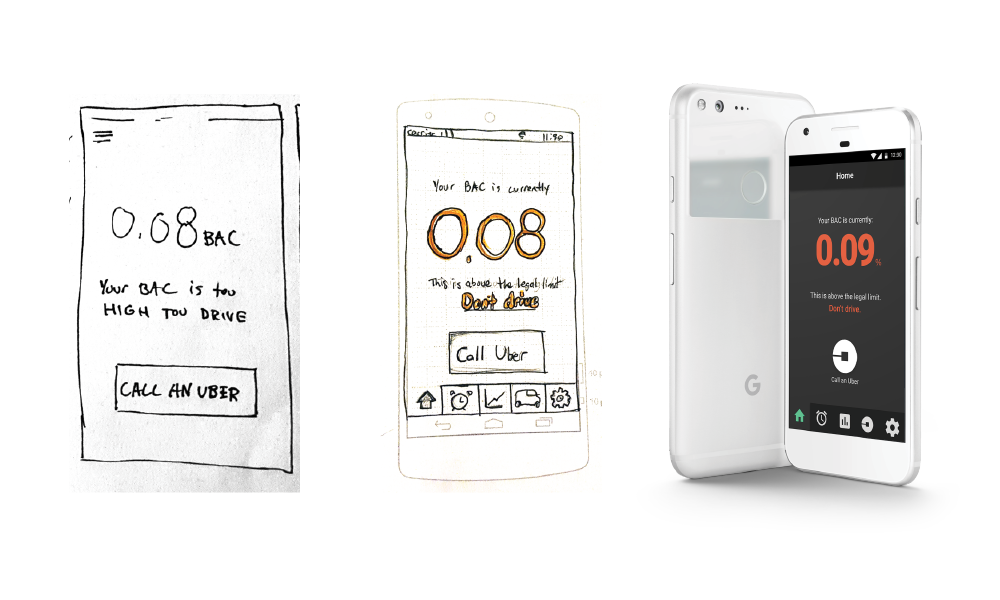
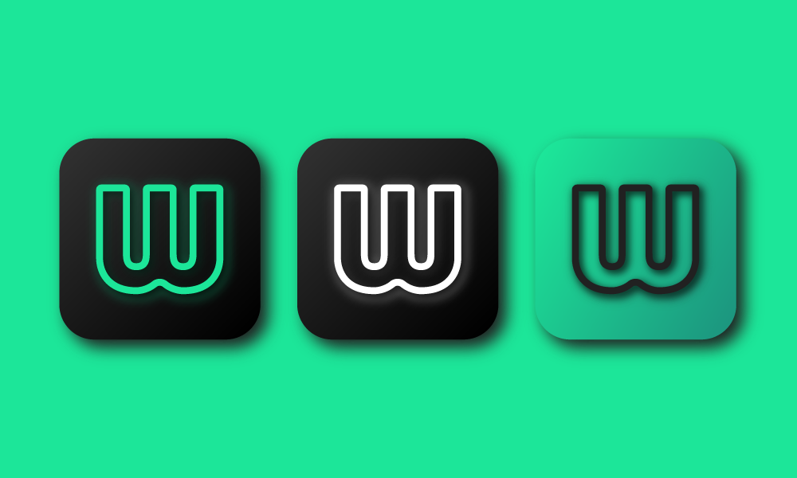
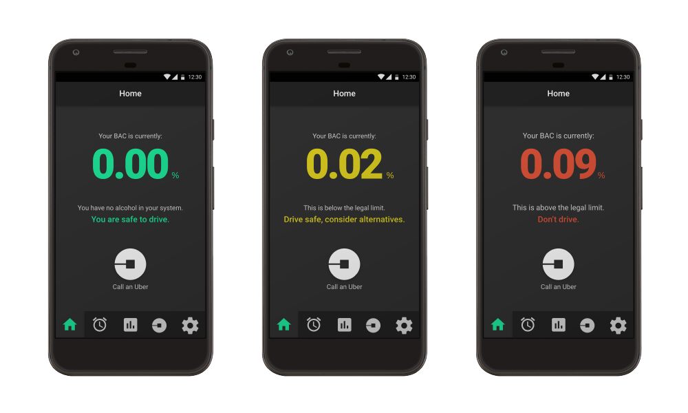
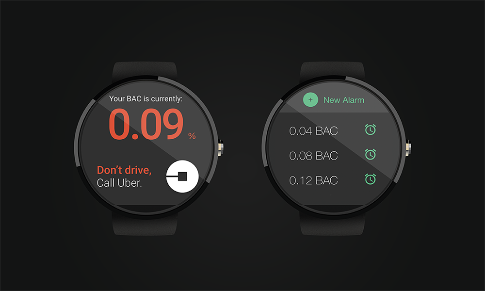
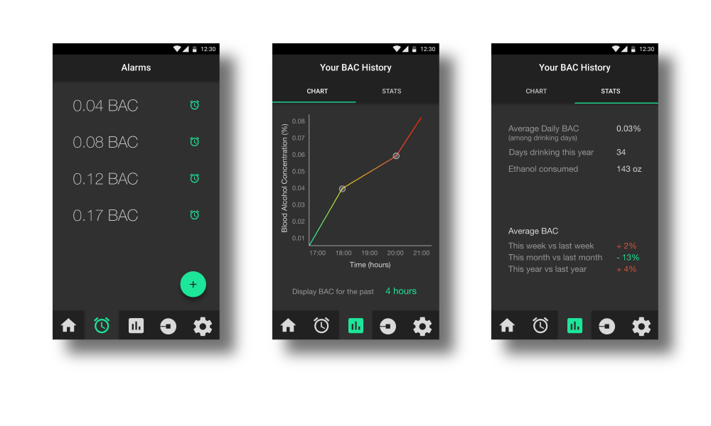

Wingman is an app designed to work with a wearable smart product. Paired with a smartwatch, it helps you track your Blood Alcohol Concentration (BAC).
Using the sub-dermal scanner on the back of your smartwatch, Wingman can calculate your BAC by analyzing your sweat. It was designed to provide awareness to ensure users can get home safely.

Here is an example of different stages in the design process. After researching my target demographics and their needs, I start by roughly sketching out feature and possible layouts. Onec I have a more focused idea of what I need the app to do and how, I create a more deatiled sketch which serves as a template for designing it digitally.

The app icon, also in black and white and reverse.

The home screen features a simple UI, which gives you information at a glance. Wingman will potentially be used while under the unfluence, so getting the point across quickly and boldly is important.

The flow for the watch version is heavily simplified. It only has the home screen, and the alarm system. Since space is limited, many feature are not usable or not needed.

Wingman also features an alarm system, as well as charts and statistics about your alcohol consumption. Alerts tell you when you have reahed certain BAC percentages.